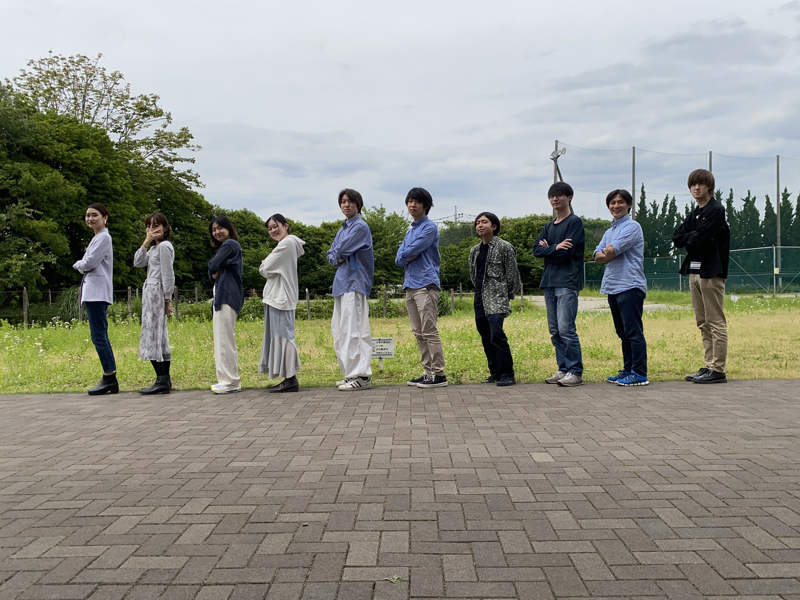

このプロジェクトでは、「曲分析」と「リアルタイムカメラを用いた音楽の生成」を行っています。
曲分析では、
リアルタイムカメラを用いた音楽の生成は、ユーザは目を認識させて画面上の楽器を演奏し、自分だけのオリジナル曲を生成できるツールです。
まず、元となる曲のテンポを決め、スタートします。画面上にある楽器のボタンの場所に目を認識させて演奏していきます。途中でテンポを変えたり、
DJのように一時停止・再生させたりすることもできます。
小田切プロジェクトのメンバーを紹介します。
TwitterとTumblrをやっています。
▲一番上に戻る